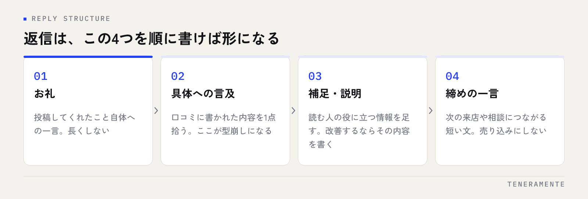

Google口コミの返信の例文を探しているとき、本当に必要なのは文面そのものではなく、何を書けばよいかの判断基準です。返信は投稿した本人への返事に見えて、実際にいちばん読んでいるのは、これから来店するかどうかを迷っている人だからです。この記事では、どの返信にも共通する要素と、高評価・低評価・コメントなしの3パターン別の例文を整理します。
📌 この記事の結論
口コミの返信は、投稿者へのお礼ではなく、次に読む人への説明として書きます。お礼・具体への言及・補足・締めの4つを型にしておけば、どの口コミにも同じ手順で返信できます。
01口コミの返信は、投稿者だけに向けて書くものではない
返信を書くとき、多くの方が投稿した本人の顔を思い浮かべます。もちろん相手はその人なのですが、その文章が表示され続ける場所は、店舗の口コミ一覧です。つまり、まだ来店していない人が、店選びの途中で読む文章でもあります。
この視点があるかどうかで、書く内容が変わります。「ありがとうございました」だけの返信が並んでいる状態は、丁寧ではありますが、読む人に新しい情報を渡していません。一方で、どの席が静かなのか、混みやすい時間はいつか、どんな相談に対応できるのかが返信の中に書かれていれば、それ自体が店舗の説明になります。
低評価への返信も同じです。相手を納得させることより、第三者が読んだときに「この店は指摘に向き合う店だ」と伝わることを目的に置くと、書き方が定まります。そもそも口コミが少なくて返信の機会が無い場合は、Google口コミを増やす方法を先にご覧ください。
02どの返信にも共通する4つの要素
パターン別の例文に入る前に、共通の型を決めておきます。この4つを順に書くだけで、文面に迷う時間はほとんど無くなります。

- お礼：投稿してくれたこと自体への一言。長くしない
- 具体への言及：口コミに書かれた内容のうち1点に触れる。ここが無いとテンプレートに見えます
- 補足・説明：読む人の役に立つ情報を足す。改善するならその内容を書く
- 締めの一言：次の来店や相談につながる短い文。売り込みにしない
いちばん抜けやすいのが2番目です。「ご来店ありがとうございました。またのお越しをお待ちしております」で終わる返信は、どの口コミにも貼れてしまう文章で、読む人には定型文だと分かります。口コミの中の言葉を1つ拾って返すだけで、印象は大きく変わります。
03高評価の口コミへの返信例文
星が高く、内容も好意的な口コミへの返信です。ここは書きやすい反面、全部同じ文面になりやすい場所でもあります。
例文：具体的に褒めてもらえた場合
この度はご投稿ありがとうございます。担当した者にもお言葉を伝えました。ご相談の内容によってはお時間をいただく場合がございますので、事前にご連絡いただけますとご案内がスムーズです。またお近くにお越しの際はお立ち寄りください。
ポイントは、お礼のあとに読む人に向けた案内を1つ入れていることです。事前連絡の話は投稿者にとっては不要かもしれませんが、これから来る人には役に立ちます。
短い口コミや、星だけに近い高評価の場合は、無理に長くする必要はありません。「ご投稿ありがとうございます。お気づきの点がありましたら、次回ご来店の際にお気軽にお知らせください」程度で十分です。返信の長さは、口コミの長さに合わせると自然に見えます。
04低評価の口コミへの返信例文
いちばん悩むのがここです。先に押さえておきたいのは、低評価そのものより、放置されている低評価のほうが読む人に影響するということです。
例文：待ち時間・対応への指摘
ご不便をおかけし申し訳ございませんでした。ご指摘いただいた点は店舗内で共有し、混み合う時間帯の人員配置を見直しております。お手数でなければ、詳しい状況をお聞かせいただけますと今後の改善に生かせます。貴重なご意見をありがとうございました。
書くときの順番は、謝罪 → 事実の確認 → 対応 → お礼です。言い訳から始めないこと、そして改善内容は実際に取り組むことだけを書くことが条件になります。書いた対応をやらないと、次の口コミで指摘されます。
事実と違う内容が書かれている場合
感情的に反論せず、事実だけを淡々と示します。「そのような対応をした記録が確認できておりませんが、行き違いがあったようでしたら申し訳ございません。差し支えなければ、ご来店日をお知らせいただけますでしょうか」といった形です。読む人が判断できる材料を置き、やりとりを公開の場で続けないことが大切です。
なお、口コミへの返信で個人を特定できる情報（予約内容や病状、契約内容など）に触れるのは避けてください。相手が書いていても、店舗側から具体的に書き返すのは別の問題になります。
05コメントなし・星だけの口コミへの返信例文
文章が無い口コミは、返信しづらく感じますが、触れる内容が無いだけで対応は難しくありません。
| 口コミの種類 | 返信の目的 | 避けたいこと |
|---|---|---|
| 高評価・コメントあり | 読む人への案内を1つ足す | 全件同じ定型文 |
| 低評価・コメントあり | 向き合う姿勢を第三者に示す | 言い訳・反論から始める |
| コメントなし（星だけ） | 存在を認識していると示す | 理由を問い詰める |
高評価で星だけなら「ご評価いただきありがとうございます。またのご利用をお待ちしております」で構いません。低評価で星だけの場合は、「ご期待に沿えず申し訳ございませんでした。お気づきの点がございましたら、お聞かせいただけますと幸いです」と、問い詰めずに窓口だけ開けておく形にします。
06返信を続けるための運用を決める
例文があっても、書く人と書く日が決まっていなければ続きません。最低限、次の3つを決めてください。
- 担当：書く人と、公開前に確認する人。1人運用にすると休んだ週に止まります
- 頻度：毎日見る必要はありません。曜日を決めて週1回まとめて返す形で十分です
- 判断基準：低評価のうち、どこからを店長や本部に上げるかの線引き
低評価への一次対応の文面は、あらかじめ用意して共有しておくと、その場で悩む時間が消えます。口コミ以外も含めた月次の点検項目はGoogleビジネスプロフィール 月次運用チェックリストに、自社で一通り運用する場合の全体像はMEO対策を自分でやる方法にまとめています。
読む人が見ているのは、口コミの星ではなく、その下に何が書かれているかです。
07よくある質問
すべての口コミに返信したほうがいいですか？
返信までどれくらいの早さが必要ですか？
返信にAIを使っても問題ありませんか？
08まとめ：例文は型として使い、自店の言葉に置き換える
口コミの返信で迷うのは、文面を毎回ゼロから考えているからです。お礼・具体への言及・補足・締めの4要素を型にし、高評価・低評価・コメントなしの3パターンで基本の文面を用意しておけば、判断に使う時間はほとんど無くなります。そのうえで、口コミの中の言葉を1つ拾って書き換える。ここだけを人がやれば、定型文には見えません。
今日できるのは、返信していない口コミを一覧で確認し、担当と曜日を決めることです。文面の用意はそのあとで構いません。
TENERAMENTEでは、MEO対策を、口コミの集め方と返信の運用まで含めて店舗側で続けられる形にすることを重視しています。どこまで自社でやり、どこから任せるかを整理したい段階でも構いませんので、ご相談ください。